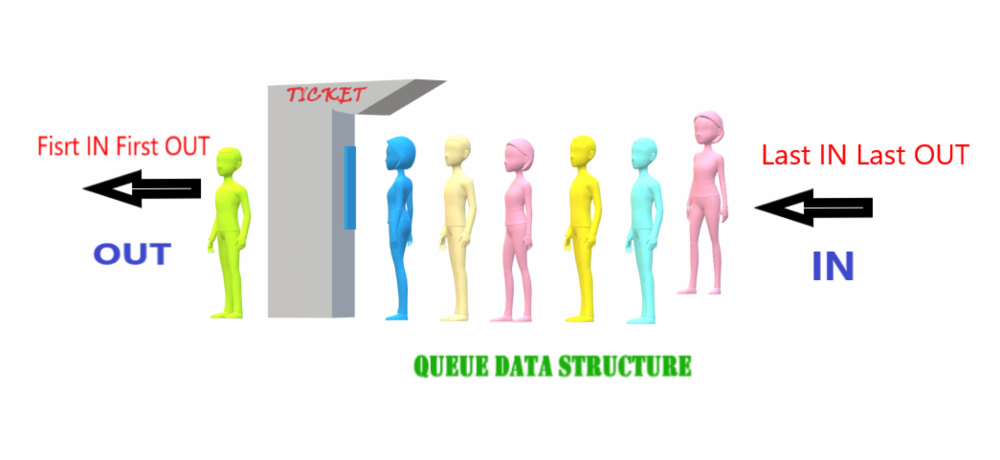

Introduction to Queues
A queue is a linear data structure that follows the First-In-First-Out (FIFO) principle. In a queue, elements are added at the rear and removed from the front. It is commonly used in various applications to manage data in an ordered manner.
FIFO Principle of Queue
A Queue is like a line waiting to purchase tickets, where the first person in line is the first person served (i.e. First come first serve).
Position of the entry in a queue ready to be served, that is, the first entry that will be removed from the queue, is called the front of the queue (sometimes, head of the queue), similarly, the position of the last entry in the queue, that is, the one most recently added, is called the rear (or the tail) of the queue.

Characteristics of Queue
- Queue can handle multiple data.
- We can access both ends.
- They are fast and flexible.
Key Features of Queues
- First-In-First-Out (FIFO) order.
- Enqueue operation to add elements to the rear of the queue.
- Dequeue operation to remove elements from the front of the queue.
- Commonly used in task scheduling, print spooling, and more.
Types of Queue
- Input Restricted Queue: This is a simple queue. In this type of queue, the input can be taken from only one end but deletion can be done from any of the ends.
- Output Restricted Queue: This is also a simple queue. In this type of queue, the input can be taken from both ends but deletion can be done from only one end.
- Circular Queue: This is a special type of queue where the last position is connected back to the first position. Here also, the operations are performed in FIFO order.
- Double-Ended Queue (Dequeue): In a double-ended queue, the insertion and deletion operations, both can be performed from both ends.
- Priority Queue: A priority queue is a special queue where the elements are accessed based on the priority assigned to them.
To learn more about different types of queues, read the article on Types of Queues.
Basic Operations for Queue in Data Structure
- Enqueue(): Adds (or stores) an element to the end of the queue.
- Dequeue(): Removal of elements from the queue.
- Peek() or front(): Acquires the data element available at the front node of the queue without deleting it.
- rear(): This operation returns the element at the rear end without removing it.
- isFull(): Validates if the queue is full.
- isNull(): Checks if the queue is empty.
Enqueue() Operation:
Enqueue() operation in Queue adds (or stores) an element to the end of the queue. The following steps should be taken to enqueue (insert) data into a queue:
- Check if the queue is full.
- If the queue is full, return overflow error and exit.
- If the queue is not full, increment the rear pointer to point to the next empty space.
- Add the data element to the queue location, where the rear is pointing.
- Return success.
Dequeue() Operation:
Removes (or accesses) the first element from the queue. The following steps are taken to perform the dequeue operation:
- Check if the queue is empty.
- If the queue is empty, return the underflow error and exit.
- If the queue is not empty, access the data where the front is pointing.
- Increment the front pointer to point to the next available data element.
- Return success.
isEmpty() Operation:
This operation returns a boolean value that indicates whether the queue is empty or not.
isFull() Operation:
This operation returns a boolean value that indicates whether the queue is full or not.
Applications of Queue
Application of a queue is common. In a computer system, there may be queues of tasks waiting for the printer, for access to disk storage, or even in a time-sharing system, for use of the CPU. Within a single program, there may be multiple requests to be kept in a queue, or one task may create other tasks, which must be done in turn by keeping them in a queue.
- It has a single resource and multiple consumers.
- It synchronizes between slow and fast devices.
- In a network, a queue is used in devices such as a router/switch and mail queue.
Variations: dequeue, priority queue, and double-ended priority queue.
Top 20 Interview Questions on Queue
| Question |
Difficulty Level |
| What is a Queue data structure? |
Beginner |
| Explain the FIFO principle of a queue. |
Beginner |
| What are the basic operations of a queue? |
Beginner |
| How is a queue different from a stack? |
Beginner |
| What are the applications of a queue data structure? |
Intermediate |
| Explain the Enqueue() operation with an example. |
Intermediate |
| What is the significance of the Dequeue() operation in a queue? |
Intermediate |
| What are the different types of queues? |
Intermediate |
| How does a circular queue work, and when is it useful? |
Intermediate |
| What is a priority queue, and when is it used? |
Intermediate |
| Explain the working of a double-ended queue (Dequeue). |
Intermediate |
| What is the purpose of the Peek() operation in a queue? |
Intermediate |
| When is a queue considered empty? |
Beginner |
| How does the isFull() operation work in a queue? |
Intermediate |
| What is the significance of isEmpty() in a queue? |
Intermediate |
| Explain the differences between input-restricted and output-restricted queues. |
Intermediate |
| When is a priority queue preferred over a regular queue? |
Intermediate |
| What is the primary use of a circular queue? |
Intermediate |
| How do you implement a queue using an array? |
Intermediate |
| What is the time complexity of the Dequeue operation in a queue? |
Intermediate |
Important Points about Queues
- Queues follow the FIFO principle.
- Common queue operations include enqueue and dequeue.
- Queues are commonly implemented using arrays or linked lists.
FAQs (Frequently Asked Questions) on Queue
-
What data structure can be used to implement a priority queue?
Priority queues can be implemented using a variety of data structures, including linked lists, arrays, binary search trees, and heaps. Priority queues are best implemented using the heap data structure.
-
Queues are used for what purpose?
In addition to making your data persistent, queues reduce errors that occur when different parts of your system are down.
-
In data structures, what is a double-ended queue?
In a double-ended queue, elements can be inserted and removed at both ends.
-
What is better, a stack or a queue?
If you want things to come out in the order you put them in, use a queue. Stacks are useful when you want to reorder things after putting them in.